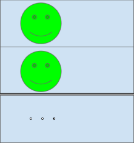
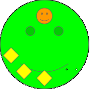
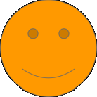
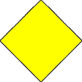

12.2. Animation project structure
We will explain the structure of the animation project. Roughly speaking, it goes like this:
- Timeline
- 
The timeline is the basic unit of animation. One timeline corresponds to one role and one cast.The following roles are responsible for all of the actual functions.
- Role
- 
A role is a collection of roles and character actions that determine how each object moves on the timeline.Within the role there are casts to be assigned and keyframe data.A role can be replaced with another object as long as it is of the same object type.
In effect, Timeline = Roll. When we say timeline in this manual, we mean role, and vice versa.
- Cast / object / avatar
- 
A cast is an object assigned to a role. This is the substance of the actual VRoid/VRM, FBX, Light, Audio, and other objects.In this application, they are simply referred to as OBJECT or AVATAR.
- Key frame
- 
A keyframe is the actual movement data of the roll, the motion. This data is only held by the role, and in principle it does not depend on each object.
timeline role cast relationship
The timeline is ultimately the same as the role. Then cast means the same as the actual object.
A role is tied to a cast (object) on a 1:1 basis. A roll can be without a cast, but a cast cannot move without a roll.
It’s loosely tied, not strict. Therefore, the role can later be associated with another cast (object).
For example, it would be as follows. (colors and icons correspond to the example above)
Roll … anime and drama characters
Cast … Voice actor, actor himself
The actual animation data is held by the role. So it doesn’t matter what the actual cast (object) is to play that motion.
Because of the above mechanism, you can play your favorite animation with your favorite object.